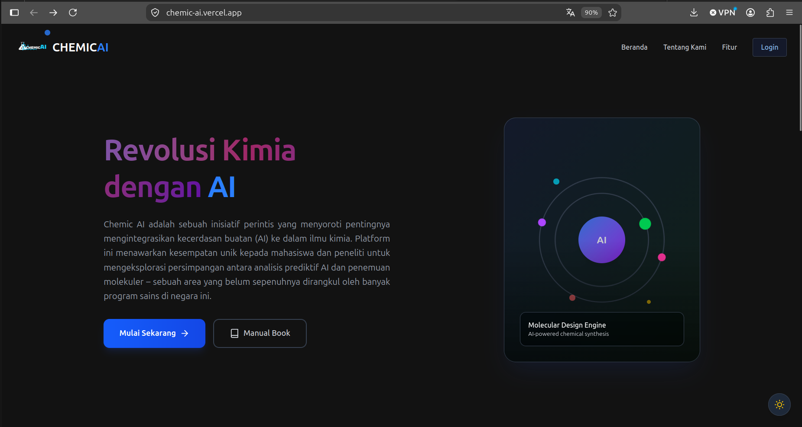
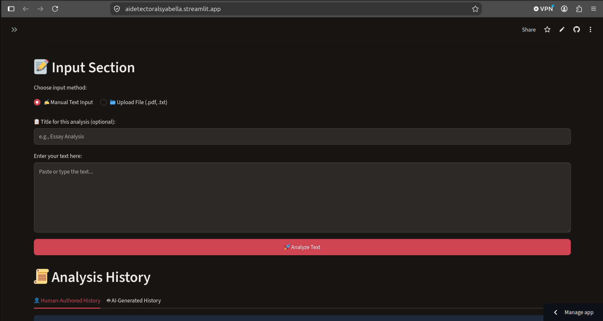
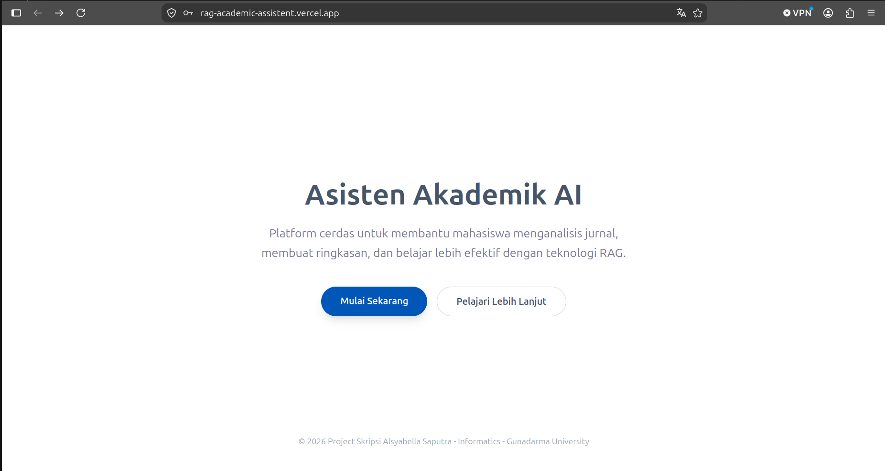

Fullstack and AI Engineer
Architecting Scalable Backend & Applied AI Systems
Gunadarma CS graduate (3.93 GPA) bridging enterprise-grade backend reliability with autonomous LLM agents, production RAG pipelines, and high-performance vector databases.
3.93
GPA / 4.00
3
Featured AI Systems
9
Certifications
CAREER MILESTONE
Work Experience. Production backend delivery.
Proven track record developing enterprise backend services, data automations, and driver mobile APIs.
IT Developer - Backend Developer
Anteraja (PT Tri Adi Bersama)- Mengembangkan otomasi alur data Zone Area lintas modul penagihan (Job Order, Billing Staging, Sales Invoice) berbasis Frappe Framework & Python.
- Merancang konfigurasi dinamis master Customer & API backend validasi QR Code task pada mobile driver saat proses muat-bongkar logistik.
- Membangun filter dinamis multi-parameter untuk tim Finance guna memfilter dan memproses ribuan data staging transaksi secara efisien.
- Menangani modul RFM, validasi safe-check skema database (get_meta()), dan manajemen rilis branch Git (merge clean, CI/CD, PEP8 Flake8).
PORTFOLIO SHOWCASE
Featured Software Projects. End-to-end applied AI and systems.
Architecting intelligent agent workflows, natural language processing pipelines, and vector knowledge engines.
ACCENTURE CAPSTONE
Novel Chemicals Discovery Agent
Agen otonom cerdas untuk akselerasi penemuan senyawa kimia baru. Mengintegrasikan penalaran LLM via Google Gemini API & LangChain dengan algoritma komputasi kimia RDKit untuk mengeksekusi sintesis molekuler, validasi stereokimiawi, dan prediksi struktur senyawa siap uji secara instan.
Live Demo
SCIENTIFIC RESEARCH PROJECT
AI vs. Human Text Detection (AIdetect)
Sistem klasifikasi teks NLP berbasis Deep Learning end-to-end yang membedakan teks buatan mesin vs tulisan manusia. Dilengkapi pipeline preprocessing otomatis, ekstraksi fitur linguistik, dan estimasi probabilitas real-time dengan deployment publik mandiri pada Hugging Face Spaces.
Live Demo
THESIS RESEARCH PROJECT
Academic Knowledge Assistant (RAG System)
Platform asisten riset akademik berbasis Retrieval-Augmented Generation (RAG). Membangun pipeline embedding dinamis ke basis data vektor (pgvector/ChromaDB) dan orkestrasi LLM untuk menyintesis jawaban dokumen ilmiah yang akurat, bersitasi ketat, dan bebas dari halusinasi model.
Live Demo
TECHNICAL ARSENAL
Skills and Tech Stack. Battle-tested tools and frameworks.
Comprehensive technical competencies developed through enterprise internship, capstone project, and thesis research.
Core & Frameworks
Python
⚡ Frappe Framework
FastAPI
⚡ Streamlit
Backend & Databases
🌐 RESTful API
 PostgreSQL
🔍 Vector DB (pgvector / ChromaDB)
💾 SQL
🛠️ DBeaver
PostgreSQL
🔍 Vector DB (pgvector / ChromaDB)
💾 SQL
🛠️ DBeaver
AI & Data
🦜 LangChain
🤖 LLM Integration
📚 RAG Architecture
🧠 NLP
📊 Scikit-learn
DevOps & Tools
Docker
Git & GitHub
🐧 Linux
🔄 CI/CD
Hugging Face Deployment
VERIFIED CREDENTIALS
🌸 Certificates & Education 🌸
Universitas Gunadarma Computer Science graduate with 3.93 GPA. Accredited technical certifications spanning machine learning, deep learning, and software delivery.
ALMA MATER
Universitas Gunadarma
Fakultas Teknologi Industri • S1 Informatika (2022 – Sekarang)
Member of Google Developer Student Clubs (GDSC) Gunadarma Chapter
3.93
GPA / 4.00
GDSC
Core Member